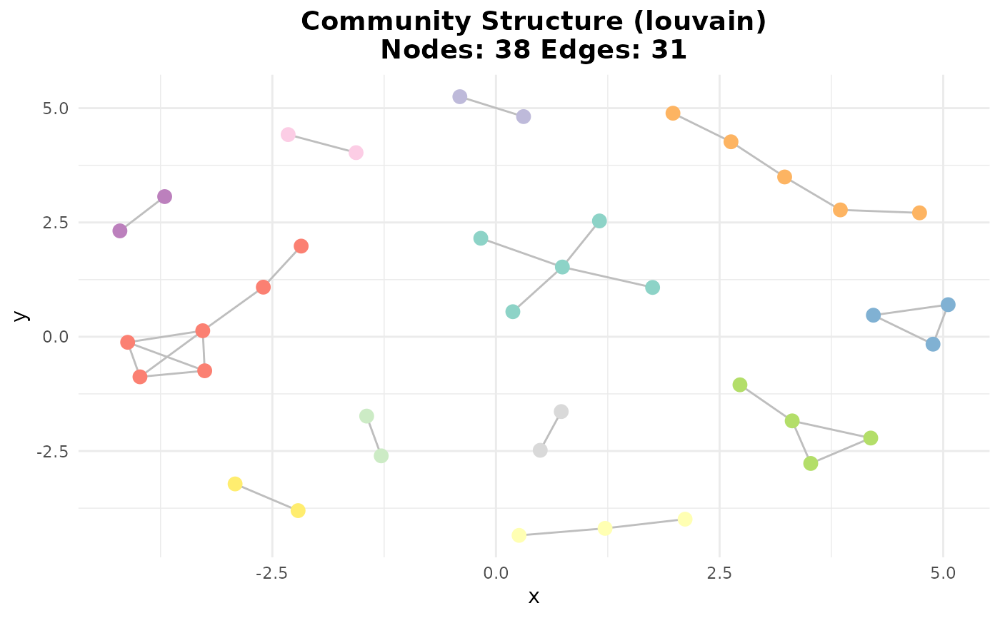
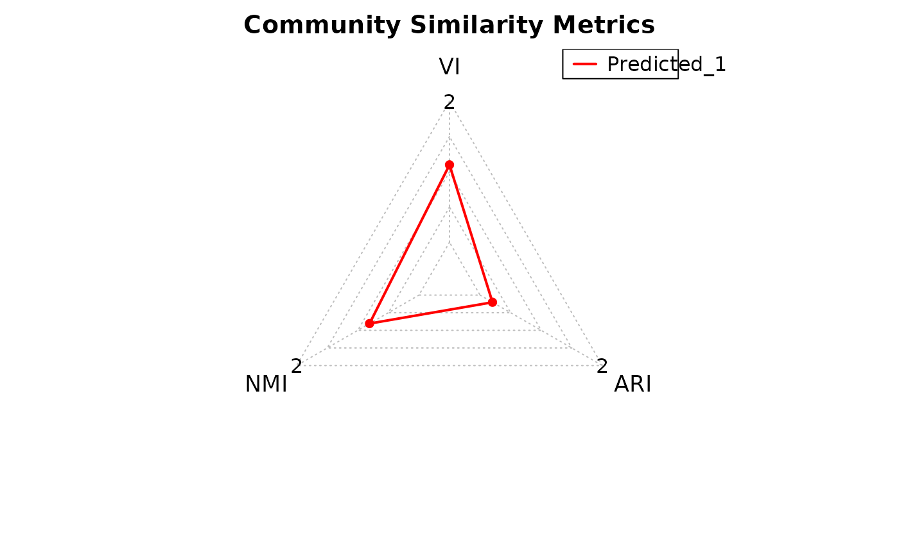
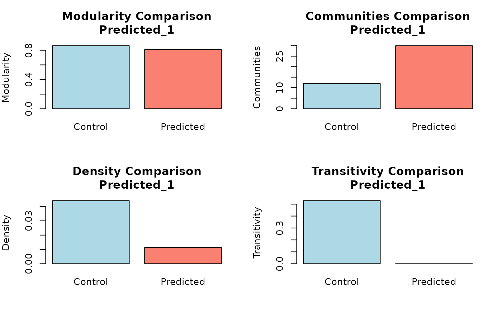

Compare Community Assignments and Topological Properties
Source:R/community_similarity.R
community_similarity.RdEvaluates similarity between a ground truth community structure and one or more predicted community structures. Computes community assignment metrics (VI, NMI, ARI) and raw topological properties (Modularity, Number of Communities, Density, Transitivity). Visualizes results via a radar plot for community assignment and bar plots for topology.
Arguments
- control_output
A list output from
community_path()representing the ground truth network. Must contain agraph(igraph object) andcommunities$membership.- predicted_list
A list of lists, each output from
community_path()representing predicted networks to compare.
Value
A list containing:
community_metrics: A data frame with VI, NMI, and ARI scores for each prediction.topology_measures: A data frame with raw topological metrics for each prediction.control_topology: A list of raw topological metrics for the ground truth network.
Details
This function requires the igraph and fmsb packages. Community similarity is measured using variation of information (VI), normalized mutual information (NMI), and adjusted Rand index (ARI). Topological properties are compared by directly plotting raw values without normalization.
Examples
data(count_matrices)
data(adj_truth)
networks <- infer_networks(
count_matrices_list = count_matrices,
method = "GENIE3",
nCores = 15
)
head(networks[[1]])
#> regulatoryGene targetGene weight
#> 1 NACA BTF3 0.2803988
#> 2 HLA-B TMSB4X 0.2494599
#> 3 HLA-C PFN1 0.2402641
#> 4 HLA-B HLA-E 0.2099704
#> 5 CFL1 UBA52 0.1823513
#> 6 BTF3 NACA 0.1818581
wadj_list <- generate_adjacency(networks)
swadj_list <- symmetrize(wadj_list, weight_function = "mean")
binary_listj <- cutoff_adjacency(
count_matrices = count_matrices,
weighted_adjm_list = swadj_list,
n = 2,
method = "GENIE3",
quantile_threshold = 0.99,
nCores = 15,
debug = TRUE
)
#> [Method: GENIE3] Matrix 1 → Cutoff = 0.18854
#> [Method: GENIE3] Matrix 2 → Cutoff = 0.19182
#> [Method: GENIE3] Matrix 3 → Cutoff = 0.19202
head(binary_listj[[1]])
#> ACTG1 BTF3 CD3E CFL1 EEF1A1 EEF1D EEF1G EEF2 FTH1 FTL HLA-A HLA-B HLA-C
#> ACTG1 0 0 0 0 0 0 0 0 0 0 0 0 0
#> BTF3 0 0 0 0 0 0 0 0 0 0 0 0 0
#> CD3E 0 0 0 0 0 0 0 0 0 0 0 0 0
#> CFL1 0 0 0 0 0 0 0 0 0 0 0 0 0
#> EEF1A1 0 0 0 0 0 0 0 0 0 0 0 0 0
#> EEF1D 0 0 0 0 0 0 0 0 0 0 0 0 0
#> HLA-E NACA PFN1 TMSB4X UBA52
#> ACTG1 0 0 0 0 0
#> BTF3 0 1 0 0 0
#> CD3E 0 0 0 0 0
#> CFL1 0 0 0 0 0
#> EEF1A1 0 0 0 0 0
#> EEF1D 0 0 0 0 0
consensus <- create_consensus(binary_listj, method = "vote")
comm_cons <- community_path(consensus)
#> Detecting communities...
#> Warning: minimal value for n is 3, returning requested palette with 3 different levels
#> Running pathway enrichment...
comm_truth <- community_path(adj_truth)
#> Detecting communities...

#> Running pathway enrichment...
#> 'select()' returned 1:1 mapping between keys and columns
#> Reading KEGG annotation online: "https://rest.kegg.jp/link/hsa/pathway"...
#> Reading KEGG annotation online: "https://rest.kegg.jp/list/pathway/hsa"...
sim_score <- community_similarity(comm_truth, list(comm_cons))

